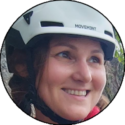

Relazione
| Data Uscita | 29-07-2023, Sabato | Area | Disgrazia |
|---|---|---|---|
| Luogo di Partenza | Predarossa - Val Masino (SO) | Quota |
1955m la partenza 2559m il rifugio Ponti 3678m la cima |
| Dislivello | 1750m | Tempi | 11:00 ore (03:00 ore la via) |
| Esposizione | Ovest, Nord-Ovest | Difficoltà Tecnica | III, 35° |
| Punti di Appoggio | Rifugio Ponti | Acqua | Diversi fiumi fino al rifugio Ponti, l'acqua di scioglimento del ghiacciaio più alto. |
| Partecipanti |
 Nina,
 Oracolo Oracolo
|
||
(clicca sull'immagine per scarica la traccia GPS)
Accesso
Da Lecco imboccare la SS36 direzione Valtellina, proseguendo verso Sondrio al bivio di Colico. Superate le gallerie zona Morbegno, giunti a Ardenno, prendere a sinistra direzione val Masino (indicazioni evidenti). Salire la strada della Val Masino fino al paese di Filorera, dove nei pressi di una curva dove sorge il Rising Moon cafè si prende a destra (cartelli) seguendo la strada di Predarossa, che va seguita fino a dove finisce. L'ultimo tratto è a pagamento, 10€ nel 2023 (da fare online), o altrimenti gratuito se si pernottasse al rifugio Ponti.
Avvicinamento
Seguire l'evidente sentiero che attraversa la bella piana di Predarossa, poi salire in un largo bosco fino a una seconda piana superiore, dove il sentiero vira a sinistra e risale per comodi tornanti la bastionata rocciosa nel suo punto più debole. Superato questo punto il sentiero prosegue per un lungo traverso ascendente in direzione Disgrazia, fino al rifugio Ponti in una bella posizione panoramica sulla vallata.
Dal rifugio seguire brevemente il sentiero Roma verso destra (indicazioni Disgrazia) scendendo in una valletta e risalendo un breve pendio che porta sulla dorsale ben visibile dal rifugio. Da lì si prende a sinistra il filo di cresta della dorsale (altra indicazione Disgrazia) che si segue finchè finisce sulla morena alla base del ghiacciaio. Seguire la morena tra i numerosi ometti passando tra rocce e belle placche fino all'inizio del ghiacciaio.
Via
Affrontare il ghiacciaio sul suo versante sinistro (destra idrografica) stando a ridosso della bastionata fino a dove la pendenza diminuisce ai piedi del Monte Pioda. Da qui piegare a destra raggiungendo la fine del ghiacciaio, superare con attenzione la parte finale e salire in cresta tramite due possibili itinerari: se l'innevamento lo permette, un comodo canalino ripido sulla destra permette di saltare la prima parte di cresta; in alternativa (stagione avanzata) salire direttamente nel punto più basso della cresta e seguirla facendo attenzione ai sassi mobili, sul filo o leggermente sul versante Sud (lato Ponti), superando un paio di cordini per fare sicura, fino alla forcelletta dove si ricongiunge al percorso del canalino.
Salire ora direttamente la cresta, seguendo i segni dei ramponi con passaggi mai troppo impegnativi. I tratti più appoggiati hanno presente neve a inizio stagione, o si superano su sfasciumi (tenendo tendenzialmente la destra) a stagione più avanzata. I punti salienti sono un traverso verso destra su placca con ottime lame per le mani (II+) dove far passare dietro la corda, e una ripida placca di serpentino da superare tutta a sinistra per poi tornare a destra sul tratto finale (III), dove in cima ci sono due cordini con maglia rapida per fare sicurezza e eventualmente calarsi al ritorno.
Seguire ancora la cresta tra neve e sfasciumi fino al risalto finale, dove ormai è visibile la cima. Superare il cavallo di bronzo, un piccolo risalto con ottimi appigli e appoggi segnati dai ramponi (III, cordino con maglia rapida in cima), poi per rocce più facili fino alla panoramica cima. È possibile volendo scendere tramite roccette sul versante Nord-Est fino al bivacco Rauzi, comodo punto di riposo (non direttamente visibile dalla cima) dove rifocillarsi prima della discesa.
Discesa
Seguire a ritroso la via di salita, prestando attenzione sui punti più delicati della cresta (dove è possibile attrezzare doppie da cordini con maglia rapida) e alla discesa sul ghiacciaio.